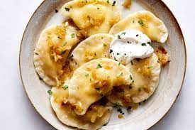

Authentic Polish Pierogi Ruskie

Description
The national dish of Poland is Pierogi. Pierogi
are a type of Polish dumpling inside which can
be any variety of fillings, such as minced beef,
onions, potatoes, cheese, or even sweet fillings
like blueberries.
Pierogi Ruskie (Polish for
Russian Pierogi) are a savory variety
of Pierogi stuffed with potatoes and chesse. They
are often topped with sour cream, fried onions, and
fresh green herbs.
Ingredients
For the filling:
- 5 potatoes
- 8 oz farmer's cheese
- 3 tbsp cheddar cheese
For the dough:
- 3 cups whole purpose flour
- 1/2 milk, warm
- 1 tbsp butter, melted
For the toppings:
- 1 onion, chopped
- 6 strips bacon, chopped
- 1/2 cup sour cream
Instructions
For the filling:
- Place potatoes in a pot, cover with water,
and cook until fork tender;
- In the meantime heat up the oil or ghee in
a frying pan, add onions and cook until
golden brown;
- Once potatoes are cooked, using a potato ricer
or potato masher, mashed potatoes so they don't
have lumps;
- Add farmer cheese and mix together;
- Add onions, other cheeses, spices, salt,
and pepper and mix well.
For the dough:
- Pour the flour on a counter or other surface
that will allow you to make the dough;
- Add a pinch of salt;
- Make a little whole in a middle and start adding
milk and butter;
- Add a little water at the time and work the dough
until you can form a ball about 10-15 minutes;
- Once done, cover it with the big bowl and let it rest
for about 20-30 minutes;
- Roll the dough until thin (like pasta) and using either
cookie cutter or large wine glass cut the circles;
- Place 1 teaspoon of the filling in the middle of the circle;
- Wet one half of the circle and then seal it together;
- Boil large pot of water and season with salt;
- Once the water is boiling put about 8 pierogi at the time;
- Once they come to the surface let them cook for 1 minute and
using a spider or slotted spoon take them out on a plate;
- If you want to fry them, use 1 tablespoon of oil or ghee
and fry pierogi on each side until golden brown;
For the toppings:
- Using separate pans add oil and onions and fry the onions
until golden brown and bacon until crispy (you don't need
fat for bacon as it is already fatty);
- Add onions and bacon on top with pierogi and serve
with sour cream.